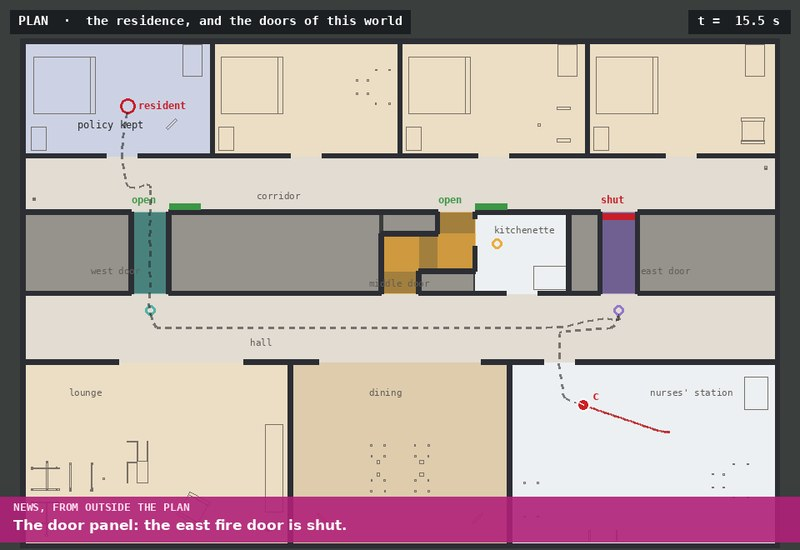
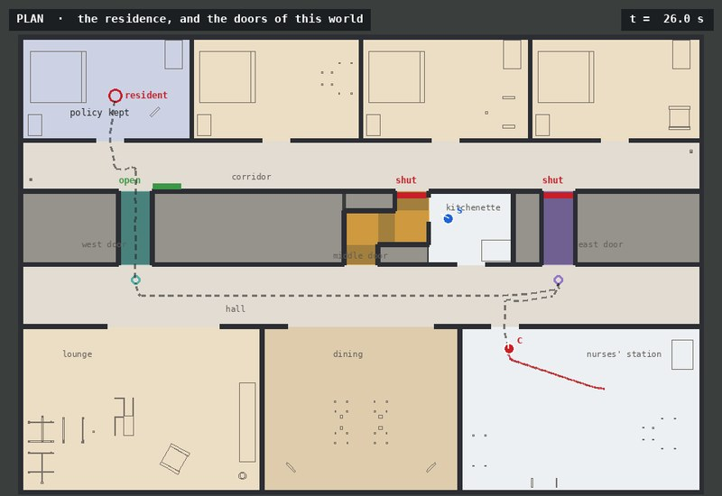
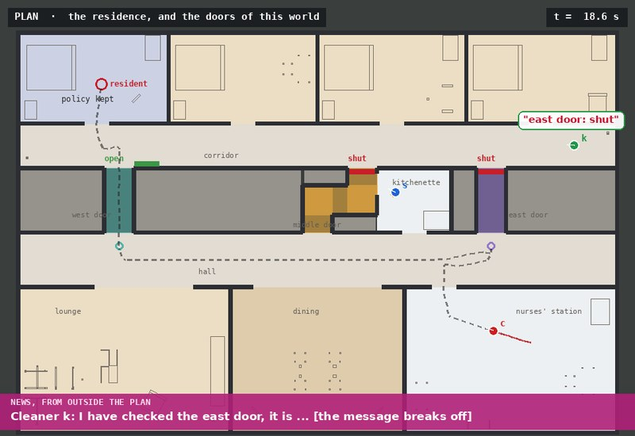
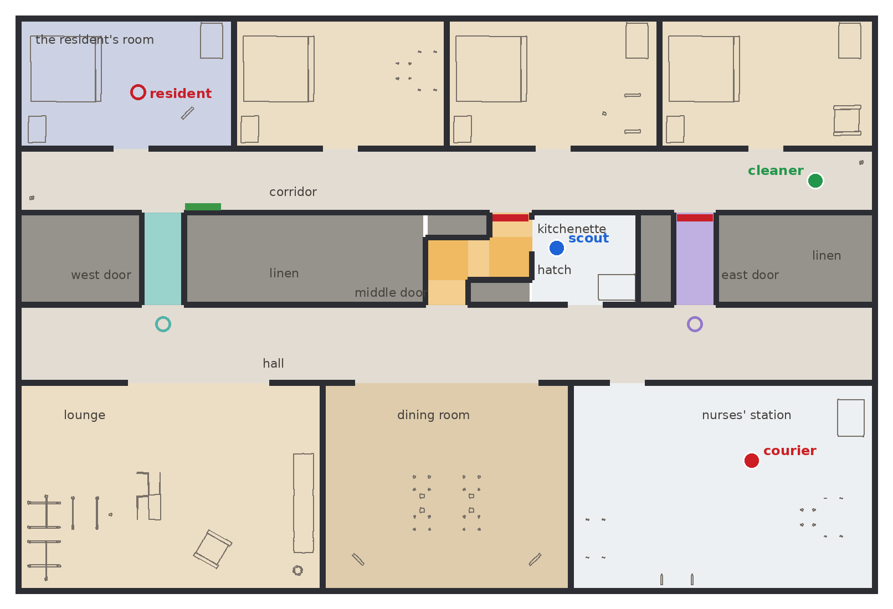
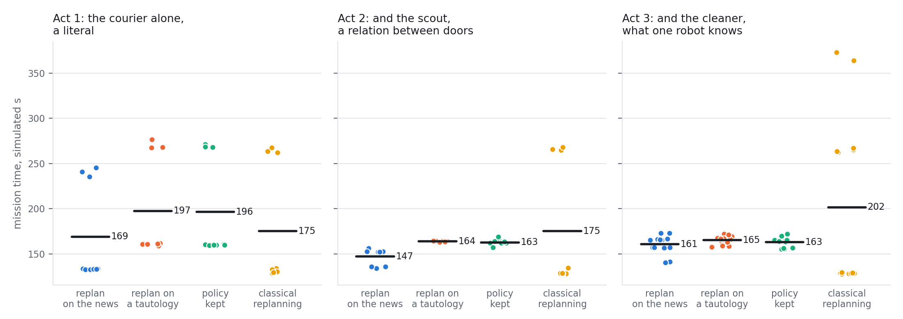

Public announcements · replanning during execution · knowledge preconditions · news about knowledge · one, two and three robots · ROS 2
A courier robot must carry a resident's medicine across a residence at night, through one of three fire doors, any of which may be shut; at least one is open, and nobody knows which. It may cross only a door it knows to be open: each crossing requires \(K_c\,\mathit{open}\), not \(\mathit{open}\). The west and east doors can be seen from the mouths of their passages. The middle passage turns twice, and its door can be seen only through a hatch in the kitchenette beside it, where a scout waits.
While the policy runs, information arrives that no policy accounted for. It enters ePlanSys as a public announcement into the executor's epistemic state; the running action checks the belief on every tick, fails, and the mission plans again from the model the announcement leaves. The team grows across three problems, and so does the kind of news: for the courier alone, a door panel's report that the east door is shut; with the scout, a maintenance note that the middle and east doors hang on one circuit; with the cleaning robot, a message from it that breaks off before its answer: I have checked the east door, it is. The last changes no fact of any door. It tells the team only what the cleaner knows.
Every epistemic run delivered, 96 of 96, and no epistemic run met a shut door. Planning again on the news saved 27.4 s on average against the policy kept in act 1 and 15.6 s in act 2, in every pair; in act 3, 2.2 s on average, not distinguishable from nothing, all of it in the one world where the cleaner's answer spares the courier a drive. A tautology announced at the same instant, which separates what the news is worth from what planning again is worth, gained nothing. A first batch showed that a policy of least depth can start a drive before the answer that decides it; committing drives late, a transformation that keeps every policy a solution of the same depth, removed the loss. Classical replanning, which can use the first two kinds of news and not the third, delivered in all 32 of its runs: fastest where its guess about the west door is right, it met a shut door in 12 runs and took 262 to 373 s there. 32 seeds, each under all four formulations from the same world and starts, 128 runs in Gazebo.
Package replanning_news_demo; policy from eplansys, search by Aletheia, classical plans by POPF[7] through PlanSys2[8], the residence furnished with AWS RoboMaker's residential models[9]. Full account in Replanning on News (PDF): the domain, the policies before and after each piece of news, the proofs, the batch and the implementation findings.
The runs
| take | world | executor | with the resident | time |
|---|---|---|---|---|
| act 1, replan on the news | seed 1: west open, middle open, east shut | SUCCESS | yes | 134.9 s |
| act 2, replan on the news | seed 2: west open, middle shut, east shut | SUCCESS | yes | 135.1 s |
| act 3, replan on the news | seed 4: west open, middle shut, east shut | SUCCESS | yes | 138.5 s |
What the runs show

Persistence News keeps a policy correct, under one condition A policy over positive preconditions stays a solution after any truthful announcement, provided each message it sends could not tell the listeners more than its answer. Without that, a four-world example shows news breaking a policy. See the analysis →
Evaluation A fact and a relation pay; news about knowledge, here, pays once Planning again on the news saved 27.4 and 15.6 s against the policy kept in acts 1 and 2, in every pair. The cleaner's message saved 2.2 s on average, all of it in the one world where its answer spares a drive: 22.5 s there. See the evaluation →
News about knowledge Invisible to any planner over facts The cleaner's broken message removes seven worlds and no valuation. No replanner over facts can react to it; the epistemic one asks the cleaner, and the worst case drops from seven actions to six. See the argument →Environment
The residence is a single storey of 24 by 16 m, built for this demonstration in Gazebo. The south half holds a lounge, a dining room and the nurses' station, where the courier starts, all opening onto a hall that runs the width of the building. North of the hall a band of linen rooms and a kitchenette, 2.6 m deep, carries the fire doors: three passages cross it, each closed by a door near its north end. North of the band a corridor runs the width of the building, and four residents' rooms open off it; the resident is in the north-west room. A door is AWS's door model, cut to the walls' height, standing across its passage when shut and swung against the corridor's wall when open. The furniture is AWS's too: beds, wardrobes, sofas, a dining table and chairs, a cooking bench, refrigerators.

A robot decides a door from its own laser while it stands within 0.6 m of a place the door is seen from: returns on the shut leaf say shut, returns beyond the door line with none on the leaf say open. What a robot can hit, and what its laser sees, is the collision mesh, and the floor plan every tool reasons over is cut from those meshes at a TurtleBot3's height. Rays cast over it in all eight states of the doors confirm what the domain assumes (tools/check_views.py): each straight passage's mouth decides its door, the hatch decides the middle door, and from the middle passage's mouth the scan is the same with the door open or shut. Drives run on a roadmap and may begin anywhere, since a policy abandoned on news leaves a robot part of the way along a drive.
The domain
| action | kind | the acting robot observes | the others observe |
|---|---|---|---|
| goto-vw, goto-vm, goto-ve (c or s) | public ontic | that it arrived | that it arrived |
| look-w, look-e (c or s); look-m (s, from the hatch) | semi-private sensing | open or shut | that it looked, not what it saw |
| tell-w, tell-m, tell-e (s or k) | public sensing, requires \(\mathit{Kw}_r\,\mathit{open}\) | what it said | what it said |
| cross-w, cross-m, cross-e (c) | public ontic, requires \(K_c\,\mathit{open}\) | that it crossed | that it crossed |
| deliver (c) | public ontic | that it arrived | that it arrived |
The actions are event models of dynamic epistemic logic[1], planned over as in[3]; the goal is the courier with the resident. In every problem at least one door is open and nobody knows which: seven valuations. The initial states are written explicitly, every world designated.
| act | team | news | worlds | height | worlds after | kept: a solution, height | planned after: height | valuations |
|---|---|---|---|---|---|---|---|---|
| 1 | courier | a literal | 7 | 7 | 3 | yes, 7 | 5 | 7 → 3 |
| 2 | courier, scout | a relation | 7 | 7 | 3 | yes, 7 | 5 | 7 → 3 |
| 3 | courier, scout, cleaner | knowledge | 14 | 7 | 7 | yes, 7 | 6 | 7 → 7 |
Checked against the domain's semantics without a planner (tools/policy_check.py). Kept: the policy planned before the news, on the model the news leaves.
Aletheia's AO* returns a policy of height 7 for each problem. In act 1 the courier looks at the east door, then the west, and crosses the middle door, if it comes to that, by elimination, since only the scout can see it. In acts 2 and 3 the scout looks at the middle door through the hatch while the courier drives east, and says what it saw. After the news, planned from the model it leaves, the policies have height 5, 5 and 6; in act 3 the new policy asks the cleaner.
News in execution
ePlanSys executes a policy as a behaviour tree, each action a sequence whose running part is a reactive sequence: PlanSys2's over-all condition check, CheckBeliefUnchanged, and the action itself. The epistemic state node holds the pointed model and a belief version, which it publishes with the model; an action's own update leaves the version alone. Its announce service restricts the model to the worlds where the formula holds, refuses a formula false at every designated world, and increments the version. On the next tick the running action's check fails, the reactive sequence halts the action, whose performer stops the robot, and the tree fails. The mission asks for a policy again, and the in-process solver plans from the model the state publishes: what the robots have looked at and said, and the news. Every policy, the first and every one after it, is committed late before it runs: the courier's drives are moved past the other robots' looks and messages that do not need them (see the analysis).
Four formulations run on every seed:
| formulation | at the news |
|---|---|
| replan | the news is announced, the policy interrupted and planned again from the restricted model |
| null | a tautology is announced: the policy is interrupted and planned again from a model the announcement did not change |
| keep | the news is heard and not announced; the policy planned at the start runs to its end |
| classical | POPF, replanning over the valuations consistent with the prior, the news when it states something of the doors, and every door found shut, in the manner of FF-Replan[6]: it asserts open only the most convenient possibly open door, and plans again when the news rules that door out or its laser finds it shut |
The classical formulation uses literal and relational news in full, and never stops for want of a plan; a classical model that gates each crossing on a check, as on the collapsed wing's page, has no plan in act 1 when only the middle door is open, since nothing the courier does can check that door. The news arrives 14.0 s into the mission, while the courier of every epistemic formulation drives towards the east door.
Analysis
A state is a model with designated worlds, the worlds the planner cannot rule out. Announcing \(\varphi\) keeps the worlds where it holds[2]. A policy is a solution from a state when every action on every branch is applicable, every outcome has a continuation, and the goal holds at every leaf[4]; its height is its longest branch, the quantity AO* minimises. The positive fragment \(\mathcal{L}^+\) is built from literals, \(\wedge\), \(\vee\) and \(K_i\); it contains \(\mathit{Kw}_i\,p\) and every precondition here.
A message whose precondition says that the speaker knows tells the listeners more than its answer: its occurrence rules out the worlds where the speaker could not have spoken. Call a message transparent where its modal part holds at every world of the state, designated or not. A message after a semi-private look is transparent, since everyone watched the look; so is the cleaner's, after its knowledge has been announced.
The proposition is a hazard for any executor that keeps a policy across news: nothing the policy assumed was contradicted, yet an inference it relied on, from the occurrence of an action to the facts that made it possible, no longer goes through. Every message the policies here send, before the news and after, is transparent, which the check verifies at every state reached.
The corollary bounds the worst branch's length, and says nothing of when a robot moves. A first batch, run without the step below, showed what that leaves open. After the cleaner's message, the policy of height 6 sends the courier towards the west door before the cleaner speaks: the drive is on the worst branch, so starting it early costs that branch nothing. Where the east door is open the cleaner says so 2.5 s later, but the executor finishes the drive before it reads the answer, and the courier drives back east. Planning again on the news was 18.9 s slower than keeping the policy on average in act 3, and 128 s slower in those worlds. The same slack in the policies planned at the start is what made the tautology control look good in act 2.
The mission applies this to every policy of every epistemic formulation (tools/lazy.py), and the check confirms that each result is a solution of the same height. In act 1 the courier is alone and nothing moves; in act 2 it waits for the scout's look before setting out; after the cleaner's message, it waits for the answer.
| as AO* returns them | committed late | |||||||
|---|---|---|---|---|---|---|---|---|
| act | replan | tautology | kept | saved | replan | tautology | kept | saved |
| 1 | 168.8 s | 197.7 s | 195.4 s | +26.6 s | 169.0 s | 197.5 s | 196.4 s | +27.4 s |
| 2 | 147.2 s | 161.4 s | 175.4 s | +28.2 s | 147.2 s | 163.8 s | 162.8 s | +15.6 s |
| 3 | 193.0 s | 162.2 s | 174.1 s | -18.9 s | 160.7 s | 165.2 s | 162.9 s | +2.2 s |
Mean mission time, with the policies executed as AO* returns them (the first batch) and committed late; saved: the paired mean of the kept policy's time minus the replanned one's.
Evaluation
9, 9 and 14 seeds in the three acts cycle through the valuations in which each act's news is true, and perturb every robot's start by up to 5 cm and 5 degrees. Each seed runs under all four formulations, 128 runs in all, headless, up to six side by side in lanes of their own. A run is judged by where the courier ended, by its own odometry, within 0.5 m of the resident's bedside, and by the executor's result; its time is simulated seconds from the mission's start.
| act | formulation | delivered | mean time | sd | worst | courier drove | shut doors met (runs) | plans |
|---|---|---|---|---|---|---|---|---|
| 1 | replan on the news | 9 / 9 | 169.0 s | 53.8 | 245.4 s | 32.8 m | 0 (0) | 2.0 |
| 1 | replan on a tautology | 9 / 9 | 197.5 s | 54.8 | 276.4 s | 37.2 m | 0 (0) | 2.0 |
| 1 | policy kept | 9 / 9 | 196.4 s | 54.6 | 271.3 s | 37.2 m | 0 (0) | 1.0 |
| 1 | classical replanning | 9 / 9 | 175.3 s | 66.8 | 267.5 s | 34.5 m | 3 (3) | 1.3 |
| 2 | replan on the news | 9 / 9 | 147.2 s | 8.9 | 156.5 s | 28.8 m | 0 (0) | 2.0 |
| 2 | replan on a tautology | 9 / 9 | 163.8 s | 0.6 | 164.7 s | 29.9 m | 0 (0) | 2.0 |
| 2 | policy kept | 9 / 9 | 162.8 s | 3.1 | 168.9 s | 29.9 m | 0 (0) | 1.0 |
| 2 | classical replanning | 9 / 9 | 175.1 s | 68.3 | 267.9 s | 34.5 m | 3 (3) | 1.3 |
| 3 | replan on the news | 14 / 14 | 160.7 s | 9.9 | 172.9 s | 29.1 m | 0 (0) | 2.0 |
| 3 | replan on a tautology | 14 / 14 | 165.2 s | 4.5 | 172.1 s | 29.8 m | 0 (0) | 2.0 |
| 3 | policy kept | 14 / 14 | 162.9 s | 5.2 | 172.2 s | 29.8 m | 0 (0) | 1.0 |
| 3 | classical replanning | 14 / 14 | 201.7 s | 93.7 | 372.8 s | 39.5 m | 8 (6) | 1.6 |
Delivered: runs with the courier at the resident and the executor's success. Time: simulated seconds over the runs delivered. Shut doors met: crossings begun through a door that proved shut, which only the classical formulation can begin, and the runs with any. Plans: policies or plans asked for per run.
| act | paired difference | pairs | mean | 95 % interval | longer / within 0.5 s / shorter | Wilcoxon p |
|---|---|---|---|---|---|---|
| 1 | kept minus replanned | 9 | +27.4 s | [25.9, 28.9] | 9 / 0 / 0 | 0.004 |
| 1 | tautology minus news | 9 | +28.5 s | [24.6, 32.3] | 9 / 0 / 0 | 0.004 |
| 1 | kept minus tautology | 9 | -1.1 s | [-3.6, 1.5] | 3 / 0 / 6 | 0.250 |
| 1 | classical minus replanned | 9 | +6.2 s | [-4.3, 16.8] | 3 / 2 / 4 | 0.652 |
| 2 | kept minus replanned | 9 | +15.6 s | [8.8, 22.4] | 9 / 0 / 0 | 0.004 |
| 2 | tautology minus news | 9 | +16.6 s | [9.9, 23.4] | 9 / 0 / 0 | 0.004 |
| 2 | kept minus tautology | 9 | -1.1 s | [-3.2, 1.1] | 1 / 2 / 6 | 0.195 |
| 2 | classical minus replanned | 9 | +27.9 s | [-22.0, 77.9] | 3 / 0 / 6 | 0.910 |
| 3 | kept minus replanned | 14 | +2.2 s | [-3.0, 7.5] | 3 / 3 / 8 | 0.363 |
| 3 | tautology minus news | 14 | +4.5 s | [-1.4, 10.4] | 10 / 2 / 2 | 0.058 |
| 3 | kept minus tautology | 14 | -2.3 s | [-5.0, 0.4] | 2 / 0 / 12 | 0.078 |
| 3 | classical minus replanned | 14 | +41.0 s | [-12.5, 94.4] | 6 / 0 / 8 | 0.326 |
Each difference pairs the runs of one seed, the same world and starts; positive means the first formulation took longer.

Every epistemic run delivered, and none met a shut door: the courier crosses only a door it knows to be open. In act 1 planning again on the news took 169.0 s on average against 196.4 s for the policy kept, and was faster in all 9 pairs (paired mean 27.4 s, 95 % interval 25.9 to 28.9 s, Wilcoxon \(p\) = 0.004): the door panel's report turns the courier west mid-drive, where the policy kept drives on to the east door, looks, and turns back. In act 2 the relation between doors saved 15.6 s (8.8 to 22.4 s, \(p\) = 0.004), again in every pair: with the scout's look through the hatch it settles the east door, and nobody drives to look at it.
In act 3 the cleaner's message saved 2.2 s on average (-3.0 to 7.5 s, \(p\) = 0.363), faster in 3 pairs of 14 and slower in 8, by a few seconds each. All of the gain is in the world where the middle and east doors are both shut: the answer sends the courier west at once, 140.9 s against 163.4 s. Where the middle door is open, the scout's look has already decided the courier's way and the east door no longer matters; where only the east door is open, the answer spares a look of four seconds and costs the wait for it, and the halt. The news lowers the worst case from seven actions to six, and in this residence the worst case is not where the time goes.
Planning again on a tautology took 1.1, 1.1 and 2.3 s longer than keeping the policy: with every policy committed late, planning again gains nothing when nothing is learned, and costs the halt. Classical replanning cannot use the third kind of news at all. Where its guess about the west door is right it is the fastest formulation, 129.5 s on average against 146.6 s for planning again on the news in the same worlds, since it never stops to look; where the west door is shut it drives into the door, backs out and guesses again, 262 to 373 s, and it met 14 shut doors in 12 of its 32 runs.
| act | doors | replan on the news | replan on a tautology | policy kept | classical replanning | shut doors met, classical |
|---|---|---|---|---|---|---|
| 1 | west open, middle open, east shut | 133.2 s | 160.7 s | 160.0 s | 129.4 s | 0 |
| 1 | west open, middle shut, east shut | 133.1 s | 161.2 s | 160.0 s | 132.1 s | 0 |
| 1 | west shut, middle open, east shut | 240.7 s | 270.5 s | 269.2 s | 264.2 s | 3 |
| 2 | west open, middle open, east open | 153.7 s | 163.9 s | 161.5 s | 128.5 s | 0 |
| 2 | west open, middle shut, east shut | 135.4 s | 163.6 s | 162.0 s | 130.7 s | 0 |
| 2 | west shut, middle open, east open | 152.4 s | 164.0 s | 164.8 s | 266.1 s | 3 |
| 3 | west open, middle open, east open | 165.6 s | 169.6 s | 164.8 s | 128.8 s | 0 |
| 3 | west open, middle open, east shut | 169.0 s | 165.7 s | 167.0 s | 128.6 s | 0 |
| 3 | west open, middle shut, east open | 157.1 s | 161.6 s | 156.1 s | 128.4 s | 0 |
| 3 | west open, middle shut, east shut | 140.9 s | 166.9 s | 163.4 s | 128.5 s | 0 |
| 3 | west shut, middle open, east open | 169.0 s | 164.3 s | 168.6 s | 263.9 s | 2 |
| 3 | west shut, middle open, east shut | 166.4 s | 170.2 s | 164.8 s | 265.1 s | 2 |
| 3 | west shut, middle shut, east open | 157.1 s | 158.2 s | 156.1 s | 368.3 s | 4 |
Mean mission time by world.
The news stopped the running drive at the executor's next tick, within the 0.1 s resolution of the record, and the new policy was ready 0.2 s of simulated time after the news. Planning again took 0.10 to 0.28 s of wall time, against up to 4.7 s for the first policy of a run, planned over more worlds.
Implementation
The first batch executed the policies as AO* returns them, and planning again on the cleaner's message lost time in act 3; the cause, a drive started before the answer that decides it, and the remedy are in the analysis. Its runs are kept beside the batch reported here.
ePlanSys's AletheiaPlanSolver, which runs Aletheia as a command and which the earlier demonstrations use, reads the task file and not the model the state node publishes: a replan with it plans from the initial state and forgets what the mission learned, the news included. The in-process EpistemicPlanSolver reads the published model and is used here.
Each CheckBeliefUnchanged takes the version it compares against when it is first ticked. News that arrives while no action runs becomes the next action's baseline and interrupts nothing; the policy runs on, still a solution under the theorem, but unaware. Every run here delivers its news mid-drive. Taking the baseline from the version the policy was planned against would close the window. When the reactive sequence halts an action, the executor's /action_execution_info reports no cancellation for it; the plan's result carries it as cancelled.
Limits
The news is always true and consistent with the model: a public announcement can only remove worlds, and ePlanSys refuses a formula false at every designated world. News that contradicts the model, a door the model took to be always open reported shut, needs belief revision or a model widened by regrounding, and is outside this demonstration. Aletheia minimises the worst branch's length and has no durations, while the batch measures time: the corollary bounds the first, and the second depends on the residence's distances and on which policy of least height the search returns, as the tautology control shows.
Each run carries one piece of news at one instant, 14.0 s in, chosen to fall mid-drive. The worlds are cycled, not sampled, and the comparison is of formulations on the same worlds and starts. The robots are simulated, the doors are read from scans over a known layout, the odometry is the simulator's, and mission time includes the planners' wall time, during which the simulation advanced, at a real-time factor near 0.97.
References
Reproduction
bash tools/validate.sh # views, the six problems, every policy checked, POPF python3 tools/make_world.py --act 3 --seed 4 --out RUN ros2 launch replanning_news_demo news_launch.py dir:=RUN act:=3 formulation:=replan bash tools/run_one.sh 3 4 keep RUN 1 # one run in its own lane SEEDS_3="1 2 3" bash tools/batch.sh BATCH 6 # seeds under the four formulations python3 tools/analyse.py BATCH # runs.csv and analysis.json